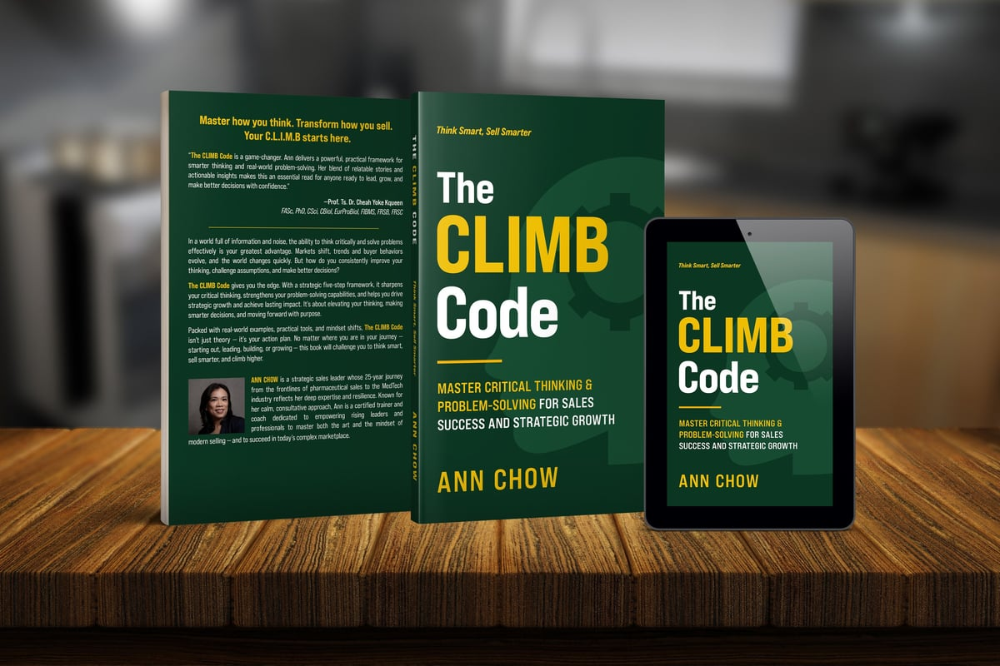

StrategyThink Beyond
Move beyond transactional selling. Gain clarity, identify opportunities, solve the right problems and develop strategies that create meaningful customer value.
For consultants, business owners, technical professionals and sales teams who know their craft but want to communicate their value, earn trust and create more consistent business results.
Perhaps you are a consultant, business owner or technical professional who feels uncomfortable selling. Or you are a sales professional who works hard, builds relationships and delivers solutions, yet struggles to achieve consistent results.
I believe great selling begins with understanding people, not pushing products.
I am a Sales & Growth Strategist, Coach, Trainer and Speaker. I help professionals and businesses strengthen commercial capability through strategic thinking, human psychology and purposeful action.
Move beyond transactional selling. Gain clarity, identify opportunities, solve the right problems and develop strategies that create meaningful customer value.
Understand how people think, behave and make decisions. Build authentic relationships, communicate with confidence and influence through trust rather than pressure.
Turn knowledge into action. Strengthen confidence, resilience and execution to achieve consistent sales performance and sustainable business growth.

With over 25 years of experience in sales, sales management and strategic account management in the healthcare industry, I have worked across frontline selling, commercial leadership, complex accounts and strategic partnerships.
My journey has taught me that successful selling requires more than product knowledge, persuasive techniques or ambitious targets. It requires the ability to ask better questions, understand what truly matters to customers, navigate complex decisions and build relationships that create long-term value.
Those experiences inspired me to write The CLIMB Code, a practical framework for critical thinking, problem-solving and strategic growth.

A practical framework for moving from complexity to clearer, more purposeful action.
Define the real challenge and desired outcome.
Identify root causes and opportunities.
Explore possibilities and create better solutions.
Measure progress, learn and adapt.
Strengthen trust, relationships and credibility.
Attract clients, communicate value and grow your business without feeling pushy.
Strengthen consultative selling skills, customer engagement and consistent performance.
Build strategic selling, key account management and sustainable revenue growth.
I support clients through coaching, corporate training, consulting and speaking engagements.
“Ann has a thoughtful, engaging and personable approach to training that encourages participation and learning.”
“Ann makes NLP practical and relatable. She helped us experience the concepts, question our patterns and apply them in real situations.”
“The CLIMB Code is a game-changer, blending practical strategies with real-world problem-solving.”
You do not have to pressure people to influence decisions. And you do not have to change who you are to achieve meaningful commercial success.
You can sell with clarity, connect with authenticity and grow with purpose.
CLIMB & BEYOND
Think Beyond. Connect Deeper. Grow Further.

Let’s connect.
Book a Discovery Call